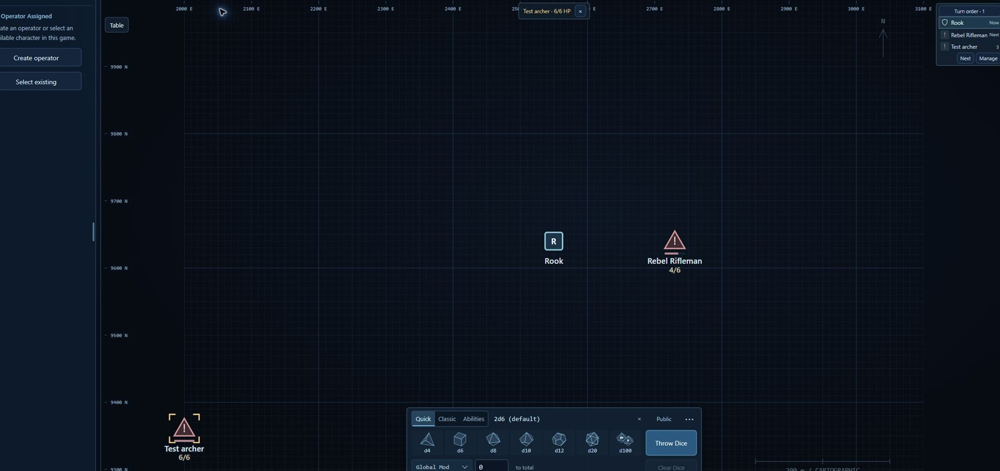

Mobile software, web applications, and game systems I’ve built.
Mobile development
LineKeeper
A work-order app for the technician on the floor.
A technician can report a fault, start a repair, and leave a completion note for the next shift. The React Native client talks to a Flask API backed by SQLite.
I made the status change and its history entry save together. That keeps the maintenance record consistent if a request fails partway through an update.
I’m building a tabletop where players can place tokens, inspect equipment, and follow the turn order on a shared map.
The interface has to answer three questions at a glance. Whose turn is it? What can they do? Where will that action land?
Tabletop systems / Interaction design

Turn queue and token actions in the prototype. Full image
More projects
Campus SwapWeb development
For my capstone, I built the sign-in flow, protected routes, and an admin dashboard for a campus marketplace. Students and administrators needed different entry points into the same application.
React / Vite
LETUMGame development
A co-op survival prototype. I’ve been working on interactions that have to agree across players, including shared storage, inventory pickups, and doors that remember their state when the world reloads.
Unreal Engine / C++
Self FinanceWeb development
A stock research dashboard that brings historical prices and related news into a single company search. I integrated the market data API and built the charts and responsive interface.
Python / Flask / Alpha Vantage
Loan SharkMobile development
A budget tracker that grew out of a database class. I prototyped the interface in Figma, built expense entry and categorization, and added validation to catch mistakes as users type.
Android / Figma
Fighting gameGame development
I led a student team building a fighting game with dodges and attacks. My work included player controls, enemy state machines, and helping the team decide what we could finish together.
Python / Pygame
2D platformerGame development
A side-scroller built with JavaFX, OpenGL, and Box2D. I worked on enemy state machines and resource loading so the physics, levels, and audio could run together smoothly.